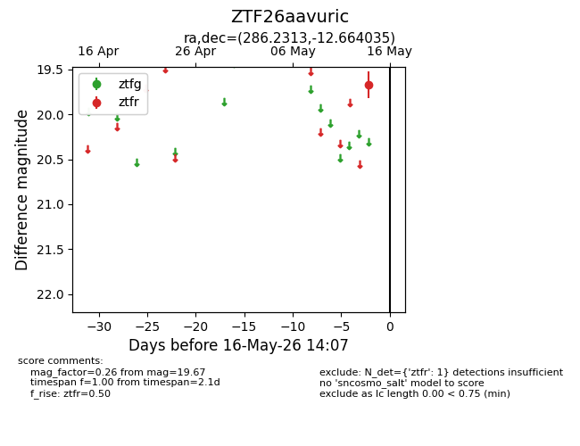
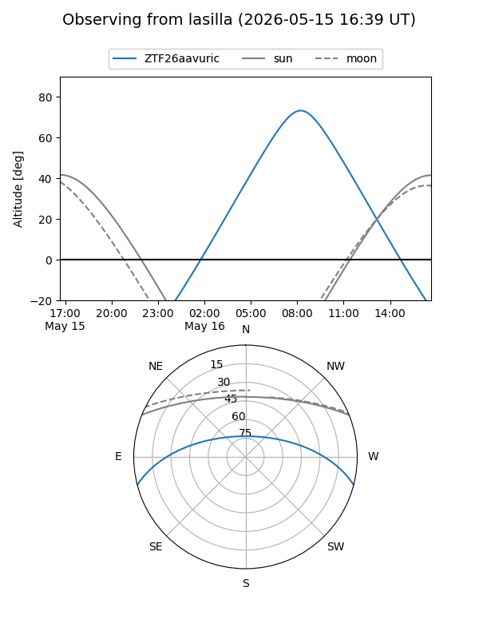
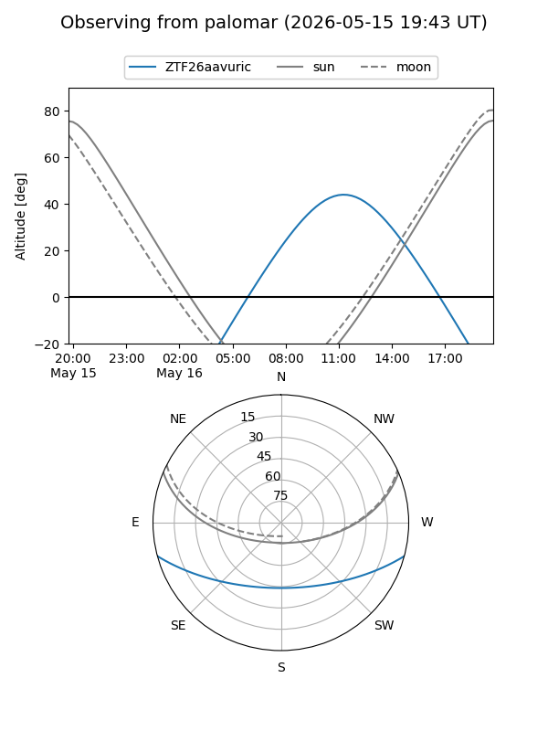

ZTF26aavuric
Target ZTF26aavuric at 2026-05-16 14:09
Aliases and brokers:
FINK: link
Lasair: link
ALeRCE: link
alt names
ZTF26aavuric (ztf,fink_ztf)
Coordinates:
equatorial (ra, dec) = 286.2313,-12.66403
equatorial (HMS+DMS) = 19:04:55.52,-12:39:50.52
galactic (l, b) = (23.0912,-8.68714)
Flags:
Photometry:
last ztfr=19.67
1 ztfr detections
Lightcurve

Visibility


Additional plots